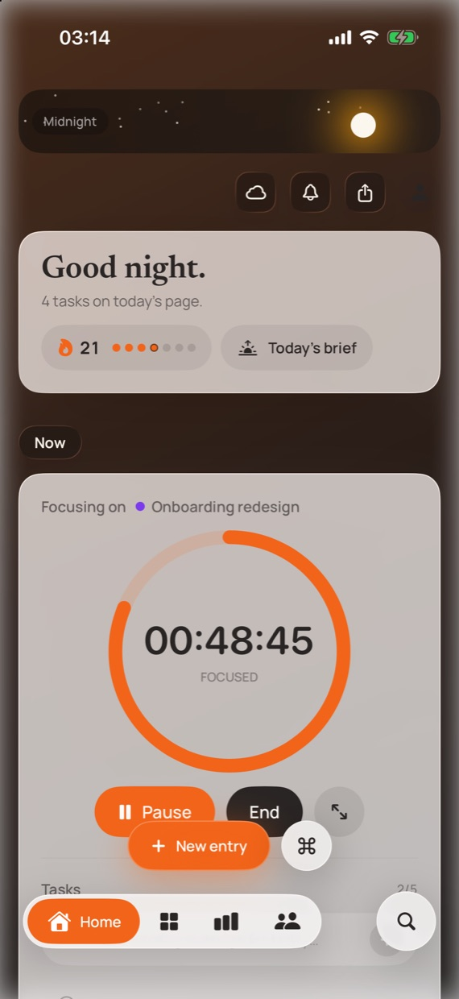

Summaries that write themselves
Every task you finish during a session is saved with it. Look back at any day and see the hours and the actual output side by side.
LockedIn times your work on Mac and iPhone. The tasks you tick off along the way become the record of what got done, so there is nothing to fill in when you stop.

Why it exists
Most of them stop the clock and then hand you a form. Busy days end with that form empty, and a week later nobody remembers what Tuesday was for.
You do the work.
LockedIn keeps the receipts.
What you get
Every task you finish during a session is saved with it. Look back at any day and see the hours and the actual output side by side.
Yesterday's work, today's open tasks and the meetings from your calendar, with the free stretches between them where focus fits.
Choose your rest days and they never break the streak. Taking Sunday off is part of the plan, not a failure.
The timer sits in a Live Activity and the Dynamic Island on iPhone, and in a floating HUD on the Mac, so you never dig for it.
How it works
Tap a project on Home and the session starts. Recent projects sit at the top, so this is usually your first tap of the day.
Add tasks with ⌘K on the Mac or the plus button on iPhone. Tap a title to rename it in place; no edit screens.
One tap. You see the time, what got done and your streak. Ended by mistake? Resume within 30 minutes and nothing is lost.
On the Mac
LockedIn on the Mac stays out of the way until you need it, then answers in a keystroke.
Questions
Yes. The beta is free on Mac and iPhone, with no trial clock and no card.
Sign in with Apple on each device. Your projects, sessions, tasks and settings sync between them, so the sessions and tasks from your Mac show up on your iPhone. There is no password to create or remember.
iPhone and iPad on iOS 26.5 or later, and Macs on macOS 26.5 or later.
Install TestFlight from the App Store on your Mac, then open the download link on this page. Do the same on your iPhone for the companion app. TestFlight walks you through the rest, and updates arrive on their own.
On the Mac, a session pauses itself after 30 minutes without keyboard or mouse input, so the time away is never counted. On iPhone, the Live Activity keeps the running timer on your Lock Screen as a reminder.
On your device, and in your LockedIn account so your devices stay in sync. Each account can only read its own data. There are no ads, no analytics and no trackers. The privacy policy has the details.
On the Mac, LockedIn can notice the app in front, such as Xcode or Figma, to show what you are working on. That stays on your Mac and is never uploaded.
Take a screenshot while using the beta and TestFlight offers to send it with a note. You can also email macbobbychibuzor@icloud.com; every message gets read.
Install TestFlight on your Mac, open the link, pick a project. Add the iPhone app with the same link and your sessions follow you.
Free during the beta. No card, no password: you sign in with Apple.